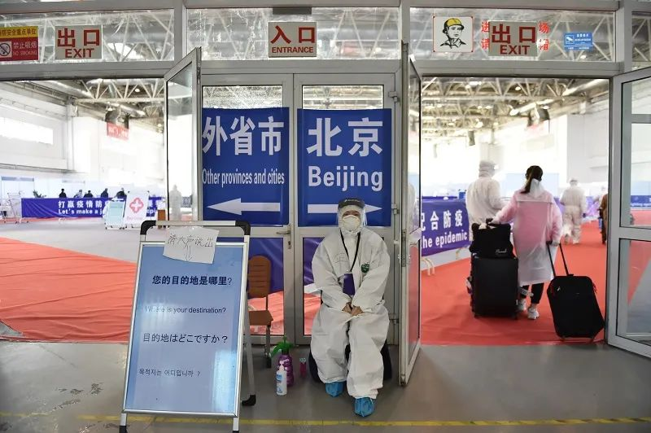

数说疫情0306：湖北非武汉地区首次零新增，美国感染数可能被低估
原文链接 备份链接 境外累计确诊病例即将超过2万。美国很可能有上千例潜在感染病例以及他们的密切接触者未能被及时发现和隔离，到目前为止，“我们看到的美国官方病例数字可能只是冰山一角”。 文 |《财经》数据研究员徐进 图 |《财经》 …

无症状感染者在入关后，辗转回到目的省份仍未病发，但被及时发现核酸检测结果为阳性，目前这一群体的比例小，发现后及时隔离、治疗，排查密切接触者，不足以影响城市复工计划

文 | 《财经》记者 辛颖 周源 实习记者 朱贺
编辑 | 王小
连续数日，中国内地多省市已无本地新增确诊病例，然而，境外输入型病例正在扩散，尤其是无症状感染者，正是压力之一。
作为重要国际口岸的北京近日接连增加防控措施，山东的无症状感染者病例即从北京中转。一位42岁的山东省德州市庆云县男子，3月9日凌晨到达北京首都国际机场，随即乘坐庆云县安排的专车回到当地集中隔离点。3月11日，该男子的新冠病毒核酸检测结果显示呈阳性，经专家组评估确定为无症状感染者。
山东德州市疾控中心将信息同步给北京，会同海关、公安等部门排查追踪密切接触者，截至发布前已追踪到10人，全部集中隔离医学观察。
3月17日，山东、四川、云南、贵州四省公布的境外输入型病例中，均出现无症状感染者。他们大多入关后辗转回到目的省份仍未病发，但被及时发现核酸检测结果为阳性。
一位疾控系统的研究人员向《财经》记者介绍，其在疫情早期所进行的新冠肺炎确诊患者密切接触者小样本筛查中，出现不到40例无症状感染者，跟踪结果目前已经全部出现症状发病。
有研究者认为，无症状感染者也有传染性。因而，中国疾控系统对无症状感染者一直密切监控。在2月5日，国家疾控中心曾要求无症状感染者暂时计入确诊病例合并报告，两天后《新型冠状病毒肺炎防控方案(第四版)》再次要求单独报告，且数据不对外公开。
一位浙江疾控系统专家告诉《财经》记者，现有全国传染病与突发公共卫生事件监测信息系统里将新冠肺炎相关人群分为三类，确诊患者、疑似患者和无症状感染者。
3月12日凌晨，杭州疾控中心公布了一名无症状新冠肺炎感染者。这名男士从事国际交流服务工作，近14日内与境外高风险国家人员有过接触。
除了境外输入的无症状感染者，本地的也是城市解除隔离复工后的风险因素之一。美国加州大学洛杉矶分校公共卫生学院副院长、流行病学资深终身教授张作风对《财经》记者分析，对所谓的无症状感染者，我们首先要排除检测试剂的假阳性，已确认无症状感染者，稳妥的方法是隔离14天。但这一群体的比例很小，发病后后及时隔离、治疗，排查密切接触者即可，不足以影响城市复工计划。
无症状感染者后续发病
3月7日，上述42岁德州男子从美国奥兰多出发，经纽约转机，9日凌晨到达北京首都国际机场，体温检测无异常。随即乘坐庆云县安排的专车回到当地集中隔离点。
3月11日，该男子的新冠病毒核酸检测结果显示呈阳性，随即被送至庆云县定点医院隔离治疗，入院后进行血液检查、CT肺部影像检查，均无异常，经专家组评估确定为无症状感染者。
四天后（3月15日），上述山东德州的无症状感染者出现咳嗽、咳痰症状，无发热以及其它不适，复查胸部CT显示左肺单发磨玻璃斑片影。3月16日，经专家组评估确诊，当天下午转送至山东省定点医院进行隔离治疗。
无独有偶，其他无症状感染者也有后续发病。云南省境外输入病例之一。
一位26岁女性，3月13日从法国巴黎乘机经广州入境，广州机场海关采样后放行。3月14日到达昆明长水机场，送至昆明市集中隔离点。当晚18时，广州机场海关向昆明海关通报，患者新冠病毒核酸检测阳性，立即被转至省传染病医院隔离观察。3月15日凌晨采样检测，新冠病毒核酸阳性，无发热、咳嗽等临床症状，诊断为无症状感染者。
3月16日，患者即出现临床症状，结合流行病学史、临床表现和实验室检测结果，确诊轻型。经排查，其密切接触者共有20人。
根据通报信息，贵州与四川的无症状感染者目前尚未发病。3月17日，四川绵阳市卫生健康委员会官网发布消息，3月13日从西班牙返绵人员罗某某，为无症状感染者，目前正在定点医院接受医学隔离观察，同机的25名密切接触者和与其接触的2名家人已落实集中隔离观察措施。
贵州省贵阳市的病例是由伦敦经香港转机到成都后乘坐高铁，于3月15日23时43分到达贵阳北站，由其父母驾私家车接回家中实行居家隔离观察。
当天下午，成都海关通报贵阳海关其核酸检测为阳性，晚19时患者即被转入将军山医院进一步检测和治疗。其无发热、无呼吸道症状、血常规正常、胸部CT为陈旧性病变，经省级专家组讨论，确认为无症状感染者。
上述浙江省疾控专家表示，将无症状感染者单独分类有其合理性，因为没有症状就无须按照有症状去治疗，只有这些无症状感染者出现了症状，才能转为确诊病例。但由于无症状感染者也有传染性，所以从流行病防控角度来看，找出这些无症状感染者非常重要，找到并他们管理起来，才能避免继续传染他人。
北京启动小汤山分流筛查压力
随着境外回国人员增多，北京、上海、广州、深圳等地近日防控境外输入措施接连升级，尤其是要加强检测。
3月16日起，改造后的北京小汤山医院正式启动，主要对海关检疫后有风险人员进行筛查，疑似病例及轻型、普通型确诊患者治疗。
北京市卫健委新闻发言人高小俊向《财经》记者介绍，境外输入型病例以轻症患者为主，如果出现重症，可在小汤山医院治疗或转至地坛医院等定点医院，视病情而定。目前，小汤山医院有1600余张床位，从22家市属医院中抽调了600余名医护人员。
对筛查后未发现异常的回国人员，将由目的地省份接回本地，京内旅客由各区接回，实施集中隔离医学观察14天。
一位知情人士向《财经》记者介绍，北京地坛医院早已开始准备，为收治国际患者或开展医学观察者准备了500—600张床位。
自2月29日，北京出现首例境外输入确诊病例以来，北京地坛医院开始负责机场送达有症状人员的集中筛查和收治工作，至3月17日8时，确诊38例，治愈3例，在院疑似病例37例。
虽然确诊、疑似病例有限，但筛查压力巨大。北京地坛医院院长李昂3月17日在北京市疫情防控新闻发布会上介绍，截止3月17日，由首都机场送至地坛医院需进行境外输入人员筛查的共计1601例。
一位3月17日从德国返京人员告诉《财经》记者在机场等待近11小时，18日凌晨3点到达地坛医院，到上午十点仍未开始筛查检测，不清楚还要等多久。
地坛医院工作人员向《财经》记者介绍，筛查人数快速增长至近300人是近三、四天的事，之前每天不会超过100人。
为适应境外到京人员来院筛查的需求，地坛医院增加检测人员和设备，提升检测能力。“咽拭子核酸检测24小时全天候进行，由每日的2次增加至5次。”李昂表示，调配1辆移动采血车，加快抽血采样速度；启用备用CT，开通专用通道，2部CT24小时持续为筛查人员服务。
同时，地坛医院还拓展开放5个留观病区，及3个疑似病区，增加了等候帐篷及椅子、移动厕所，并提供24小时餐饮配送。
小汤山将逐步为这一筛查压力分流。高小俊介绍，小汤山医院运行首日，共接收机场转运35人。经筛查，有1例来自英国的女性被确诊，其余结果待报。
“这也是史上第一次遇到如此巨大的海外输入病例风险。”北京协和医学院公共卫生学院院长刘远立对《财经》记者说，我们的第二场战役就是要打赢国际阻击战，好在经过前一段时间的国内战“疫”，我们的技术力量、动员能力、领导能力，都已经有所准备。总体形势还是向好的，北京也会逐步复工、复产、复学。
无症状感染者年龄组偏低
针对无症状感染者的流行病学研究是全球在关注的课题，以期能够对后续疫情防控措施有所建议。
“很少有传染病在未发病的情况下具备传染性，如果新冠病毒确实有此特点，那么确实很狡猾”。张作风指出，也有可能是患者有轻症，或者没有咳嗽、肺部症状，但是有肠道等其他症状，对于无症状感染者我们还需要更全面的追踪、研究。
目前最大样本数据，来自中国疾控中心2月17日发布的一篇论文。中国疾控中心研究人员对截至2月11日中国内地传染病报告信息系统中上报的所有新型冠状病毒肺炎病例，共72314例进行描述和分析，其中，呼吸道等标本新型冠状病毒病原学检测为阳性的微无症状感染者，无症状感染者889例（1.2%）。
张作风分析，这个比例已经很低了，不需要过度紧张。尤其国内大部分人已经隔离14天以上，如果没发病的话，在复工以后再发病的可能性虽然有，还是比较小，从2月10日各地已陆续复工，但是目前也没有看到一个明显的确诊病例升高，这就是实际的数据支撑。
而在不同的样本研究中也有更多发现，儿童无症状感染者比例较高是其中之一。
3月6日，湖南省疾控中心的研究人员研究回顾性分析了，2020年1月1日—2月8日湖南省新冠肺炎确诊病例及无症状感染者的流行病学特征。研究表明，湖南省 888 例新型冠状病毒肺炎确诊病例和无症状感染者中，36例无症状感染者占4%。无症状感染者中位年龄35岁(2~88岁)，相对多发低龄组人群，其中3~5岁组、6~15岁组各占11.2%(4⁄36)。该研究已发表在期刊《实用预防医学》。
研究最后指出，由于无症状感染者具有隐匿性，往往无法得到及时发现和规范管理，实际新冠肺炎无症状感染者可能被低估，这些人群很容易成为批量行走的传染源，加上其在少儿群体相对多发，对下阶段全省疫情防控，尤其是迎接即将开启的复课潮，形成倍增压力。
在南京的样本中也出现相似情况。一个发布于3月4日研究显示，南京中医药大学和南京医科大学的研究人员从江苏省南京市确诊病例或疑似病例的密切接触者中，筛选出24名无症状患者，进行了临床和社区流行病学调查，这一调查于2020年1月28日至2月9日进行。
24例无症状患者，在进行核酸筛查时均未出现明显症状。5例(20.8%)在住院期间出现发热、咳嗽、乏力等症状。12例(50.0%)患者的胸部CT表现为典型的磨玻璃状，5例(20.8%)表现为肺部条状阴影。其余7例(29.2%)CT图像正常，住院期间无症状，这7例患者的年龄中位数为14.0岁，与其他患者相比年龄较低。
无症状感染者的传播速度也是关注点之一。流行病的传播速度有两个决定因素，一是，每个病例感染了多少人；二是，人与人之间感染需要多长时间，也称世代间隔。
3月8日，比利时与荷兰的研究人员在医学预印本网站medrxiv上发布了题为《基于症状出现数据预估新冠病毒的世代间隔》的研究，其对新加坡和中国天津感染病例的分析显示，这两个地区分别有48%和62%的患者，通过接触已经感染了病毒但尚未出现症状的感染者患上新冠肺炎。
并据此计算出，新加坡病例的平均世代间隔是5.2天，中国天津病例的平均世代间隔是3.95天。
3月13日，美国、中国和法国的研究学者在医学预印本网站medRxiv发布了题为《公开报告的确诊病例中新冠病毒的序列间隔》的研究，对2020年1月21日至2月8日期间，中国大陆除湖北省外地区的468份新冠患者传播报告进行分析，每份传播报告包括感染者和被感染者可能出现症状的日期和可能的感染地点。
研究发现，有10%以上的患者是由携带病毒但尚未出现症状的人感染的。468份报告中，有59份报告表明被感染者出现症状的时间早于感染者。因此，可能会出现症状前传播的现象。该研究是首批估算无症状传播率的研究之一。
在这一研究中，研究人员认为，中国新型冠状病毒的平均序列间隔约为4天。
“数据表明新型冠状病毒可能像流感一样传播。这意味着我们需要迅速采取积极行动，遏制正在出现的威胁，”参与该研究的学者，来自得克萨斯大学奥斯汀分校(UT Austin)综合生物学教授劳伦·安塞尔·梅耶斯(Lauren Ancel Meyers)公开介绍。
【版权声明】本作品著作权归《财经》独家所有，授权深圳市腾讯计算机系统有限公司独家享有信息网络传播权，任何第三方未经授权，不得转载。

▲点击图片查看更多疫情报道
责编 | 蒋丽 lijiang@caijing.com.cn
本文为《财经》杂志原创文章，未经授权不得转载或建立镜像。如需转载，请在文末留言申请并获取授权。
原文链接 备份链接 境外累计确诊病例即将超过2万。美国很可能有上千例潜在感染病例以及他们的密切接触者未能被及时发现和隔离，到目前为止，“我们看到的美国官方病例数字可能只是冰山一角”。 文 |《财经》数据研究员徐进 图 |《财经》 …
原文链接 备份链接 根据丁香医生实时数据，截至 3 月 3 日 21:32 时，全国现存确诊病例 29930 例，累计确诊病例 80303 例，现存疑似病例 587 例。其中，重症病例 6806 例，死亡病例 2948 例， …
原文链接 备份链接 【财新网】（记者 刘登辉）截至2月24日24时，全国新冠肺炎累计确诊病例已达77658例，但这一数字并不包含无症状感染者。从国家卫健委2月4日下发的第五版新冠肺炎诊疗方案开始，明确无症状感染者也可能成为传染源，明确无症 …
原文链接 备份链接 湖北现有疑似清零。多省发现回国人员中存在无症状感染者，“外防输入”形势仍然较为严峻。美国新增迅速逼近2000例。美、韩均计划直接向民众发放现金以度过困难时期 文 |《财经》数据研究员 徐进 图 |《财经》视觉中心 编 …
原文链接 备份链接 从股市的表现来看，市场更倾向于认同用短期的不便和经济痛苦来换取对病毒的控制 文 |《财经》特派记者 金焱 发自华盛顿 编辑 | 苏琦 新冠肺炎疫情持续肆虐，美国和欧洲为应对疫情影响经济，纷纷出台各种刺激救助政策，试图 …